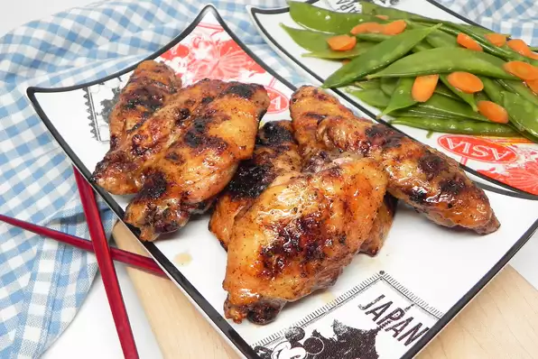

Fried Chicken Recipes

Grilled sweet and sour chicken wings. Crispy, sticky, incredibly tasty crowd pleaser. Great potluck dish.
Ingredients
- 3 pounds chicken wings
- 1 pinch garlic powder
- 1 pinch cayenne pepper
- 1 ⅓ cups white sugar
- 1 cup white vinegar
- ½ cup chicken broth
- 2 tablespoons ketchup
- 2 tablespoons soy sauce
Steps
- Preheat an outdoor grill for medium heat and lightly oil the grate.
- Wash chicken wings and pat dry. Sprinkle lightly with garlic powder and cayenne pepper.
- Cook on the preheated grill, turning every few minutes, until crispy on the outside and no longer pink at the bone and the juices run clear, 20 to 25 minutes. An instant-read thermometer inserted near the bone should read 165 degrees F (74 degrees C).
- While the wings are grilling, whisk sugar, vinegar, chicken broth, ketchup, and soy sauce together in a large saucepan over medium-high heat. Bring to a boil. Cook until sauce is rendered to 1/2 of the original volume.
- Preheat the oven to 400 degrees F (200 degrees C).
- Place wings in a large baking dish and drizzle sauce over top.
- Bake in the preheated oven until flavors have intermingled, 10 to 15 minutes.